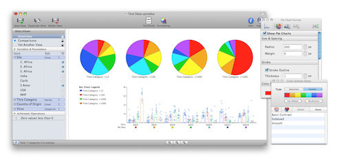

Data Mining & Visualization Software for Multicolor Flow Cytometry
Multicolor flow cytometry experiments generate vast amounts of complex data and require sophisticated software for their evaluation. SPICE is a data mining software application that analyzes large FLOWJO data sets from polychromatic flow cytometry and organizes the normalized data graphically.
SPICE enables users to discover potential correlations in their experimental data within complex data sets. Many potential applications for SPICE exist: the software can be used to analyze any multivariate data set for which a series of nominal measurements and a single continuous measurement is available.

Benefits & Features
No more wading through spreadsheets.
- Use a single application specifically designed for flow cytometry data.
- Create and adjust "views" of your source data in seconds.
- Simplify analysis for large and complex data sets.
Discover qualitative patterns within your data sets.
- Sort your data by any variable or parameter by a simple drag-and-drop interface.
- Select analytical roles for each of your experimental variables using drop-down menus.
Create simple views of complex data sets for publication.
- Define data views with a few mouse clicks.
- Use formatting palettes to customize your graphs for reports or presentations.
- Save your data views for comparison and review.
How is this software used at NIAID?
SPICE is currently used in the ImmunoTechnology lab of the NIAID Vaccine Research Center. The application is revealing relationships among numerous T-cell immune responses resulting from vaccine challenges.
What's New
5.3
- "Cool Plot" heatmap-style plot
- Improved registration system
- Multiple bug fixes
- Updated Help Book
5.2
- New Source Data Editor Mode
- Append new source data to existing SPICE documents
- Edit existing source data
- Create new documents from scratch
- Manage and rename source data structure (variables and parameters)
- Improved result data table viewer
- Drag-to-export result data from tables to Finder or Desktop
- Improved performance (4x faster than 5.1)
- Additional graph formatting options
- Improved data file format for reduced size and better compatibility on network volumes
- v4-like option to compute distribution for determining ideal threshold levels
- Multiple bug fixes
- Updated Help Book